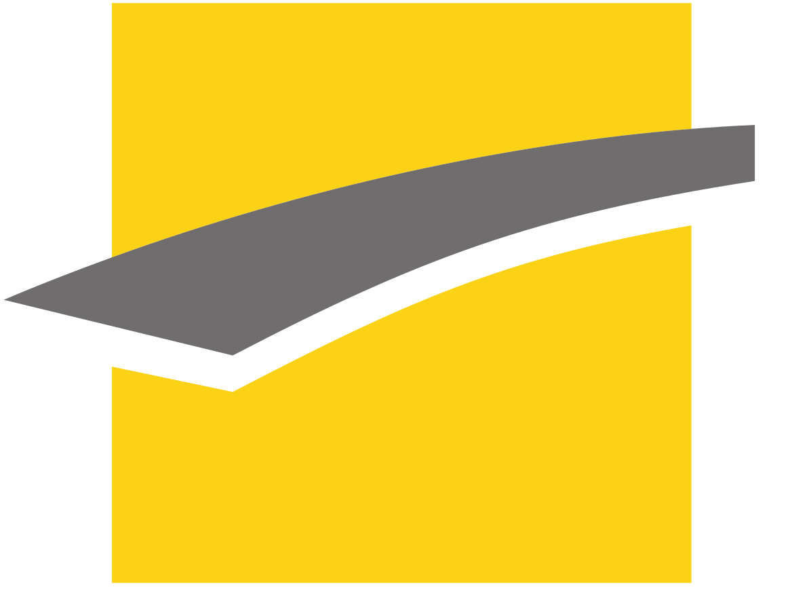
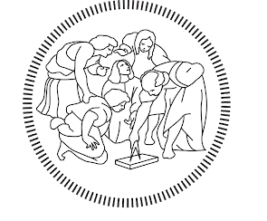

Bio
I am a PhD student in Computer and Information Science at the University of Pennsylvania, specializing in Machine Learning with a focus on NeuroAI. I am a member of the amazing NerDS Lab and fortunate to be advised by Prof. Eva Dyer.
My research interests include neuro foundation models, multivariate time series forecasting, and self supervised learning, as well as their applications to brain-computer interfaces and neural decoding.
Prior to this, I completed a MSc and MEng in Computer Science from Georgia Tech and the Université de Technologie de Compiègne (France). I also gained industry experience working on large-scale recommendation systems as an intern at Deezer.
News
-
Dec 2025A Scalable Self-Supervised Method for Modeling Human Intracranial Recordings (Charmander )BrainBody Workshop · NeurIPS 2025 · Spotlight
-
Sep 2025Revealing Potential Biases in LLM-Based Recommender SystemsCo-first author · EARL Workshop · RecSys 2025 · Oral
-
Aug 2025Began PhD at UPenn
-
May 2025Neural Encoding and Decoding at Scale (NEDS)ICML 2025 · Spotlight
-
May 2025Graduated from Georgia Tech
-
Feb 2025Graduated from UTC Compiègne
Education
-
University of Pennsylvania PresentPhD in Computer & Information Science
-
Georgia Institute of Technology 2025MSc in Computer Science
-
University of Technology of Compiègne 2025MEng in Computer Science
-
Politecnico di Milano 2021Visiting Student
Research Experience
-
NerDS Lab 2024 - PresentResearch Assistant Atlanta/Philadephia, USAAdvised by Eva Dyer.
-
Heudiasyc Lab 2023Research Assistant Compiègne, FranceWeakly supervised localization.
Industry Experience
-
Deezer 2024ML Engineer Intern Paris, FranceLarge-scale Transformers for user modeling.
-
Wise Systems 2022Cloud Engineer Intern Montreal, CanadaInfrastructure-as-code & CI/CD.
Reviewing
- Computational and Systems Neuroscience (COSYNE) 2026
- Foundation Models for the Brain and Body Workshop, NeurIPS 2025
Teaching
-
Teaching Assistant Fall 2025CIS 6250: Theory of Machine LearningUniversity of Pennsylvania